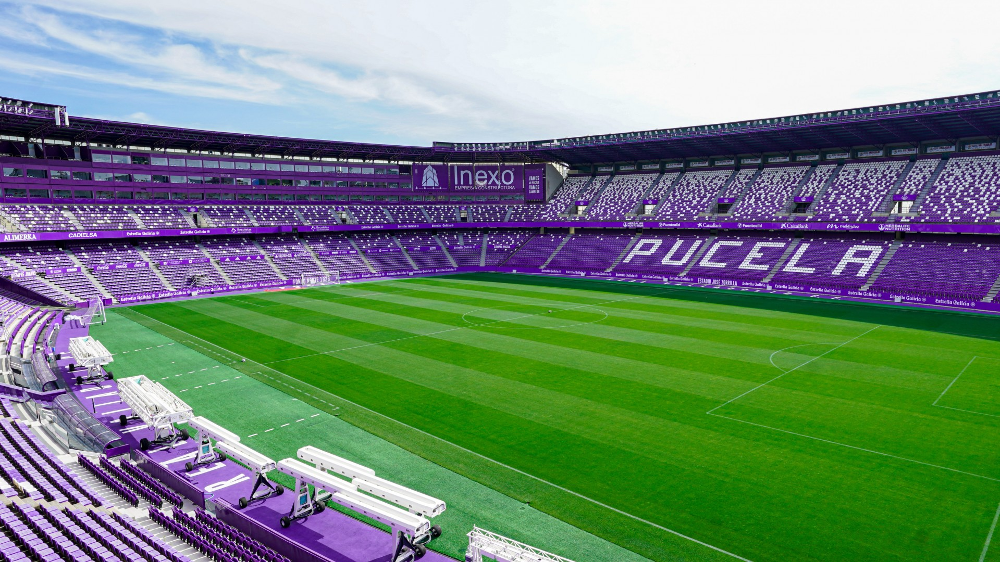

Valladolid

Nombre completo: Real Valladolid Club de Fútbo
Apodo: Pucela
Fundacion: 1928
Ciudad: Valladolid
Estadio: Estadio José Zorrilla
TITULOS

La Liga SmartBank
3
1947/48 - 1958/59 - 2006/07
ESTADIO
Nombre: Estadio José Zorrilla
Fundacion: 1982
Ciudad: Valladolid
Capacidad: 26.212 espectadores
